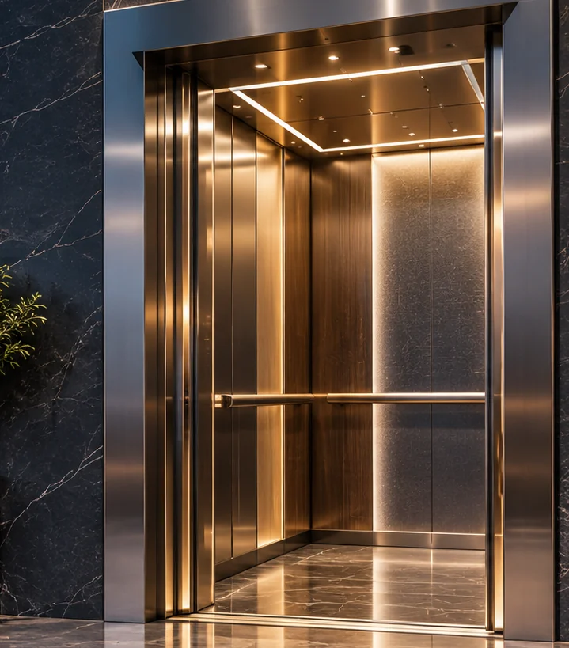
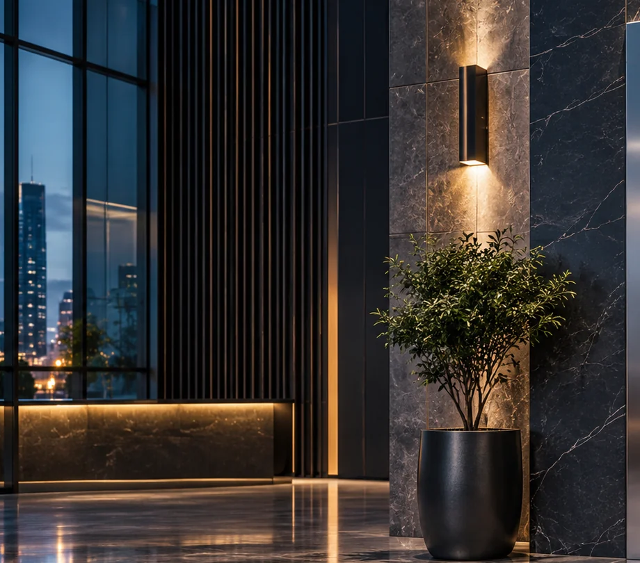

طراحی و مشاوره فنی
بررسی نیاز ساختمان، ظرفیت، سرعت، نوع کاربری و انتخاب راهکار مناسب پیش از اجرا.
راهکارهای مهندسی جابهجایی عمودی
از طراحی و انتخاب تجهیزات تا نصب، راهاندازی و نگهداری؛ نگاهی دقیق به تمام جزئیات یک حرکت ایمن و روان.
یک سیستم آسانسور، مجموعهای از تصمیمهای دقیق است.
با رویکرد ما آشنا شوید ←آنچه انجام میدهیم
از نخستین محاسبات تا نگهداری مستمر، هر مرحله با توجه به نیاز ساختمان و شرایط بهرهبرداری تعریف میشود.

بررسی نیاز ساختمان، ظرفیت، سرعت، نوع کاربری و انتخاب راهکار مناسب پیش از اجرا.
هماهنگی مراحل نصب، تنظیم اجزا و آمادهسازی سیستم برای بهرهبرداری اصولی.
بازدیدهای برنامهریزیشده و رسیدگی به وضعیت عملکردی اجزای اصلی آسانسور.
بررسی نشانههای اختلال و شناسایی فنی مسئله برای انتخاب مسیر اصلاح مناسب.
ارزیابی سیستمهای موجود و پیشنهاد راهکار برای بهبود عملکرد و تجربه استفاده.
شناخت مشخصات فنی قطعه و انتخاب جایگزین سازگار با سیستم نصبشده.

درباره آوند
آوند، هویتی نمونه برای معرفی یک مجموعه فعال در صنعت آسانسور است. این وبسایت با تمرکز بر دانش فنی، انتخاب آگاهانه تجهیزات و اهمیت نگهداری اصولی طراحی شده است.
رویکرد ما در این معرفی، ساده و روشن است: هر ساختمان شرایط خاص خود را دارد و هر راهکار باید با شناخت همان شرایط تعریف شود.
نگاه ما به فناوری ←نمونههای تصویری
این تصاویر صرفاً نمونههای مفهومی برای نمایش نوع پروژهها هستند و بهعنوان سوابق اجرایی آوند معرفی نمیشوند.
شناخت اجزای سیستم
عملکرد آسانسور حاصل هماهنگی مجموعهای از اجزاست. شناخت وظیفه هر بخش، مسیر انتخاب و نگهداری را شفافتر میکند.
مطالعه مطالب فنی ←تبدیل انرژی به حرکت کنترلشده کابین و وزنه تعادل.
مدیریت فرمانها، توقفها و هماهنگی عملکرد سیستم.
کنترل دسترسی و پشتیبانی از عملکرد ایمن در شرایط مختلف.
دفتر دانش آوند
نگاهی کاربردی به مفاهیم، اجزا و تصمیمهایی که در طراحی و نگهداری آسانسور اهمیت دارند.
ظرفیت، تعداد توقف، کاربری ساختمان و محدودیتهای فضا از نخستین مواردی هستند که باید بررسی شوند.
ادامه مطلب ←بازدید مؤثر باید بر اساس وضعیت واقعی تجهیزات و شرایط استفاده از آسانسور انجام شود.
ادامه مطلب ←تابلو فرمان مرکز مدیریت حرکت است و هماهنگی آن با سایر اجزا اهمیت زیادی دارد.
ادامه مطلب ←مطالب این بخش محتوای معرفی و آموزشی نمونه هستند و جایگزین دستورالعمل سازنده یا بررسی متخصص فنی نیستند.
اصول حرفهای
کیفیت یک سیستم تنها به قطعات آن وابسته نیست؛ انتخاب، اجرا، بررسی و نگهداری در کنار هم معنا پیدا میکنند.
راهکار فنی باید با ویژگیهای واقعی ساختمان و نوع بهرهبرداری هماهنگ باشد.
هماهنگی اجزا و توجه به مراحل نصب، پایه عملکرد مناسب سیستم است.
بررسی الزامات فنی و دستورالعملهای معتبر بخشی جداییناپذیر از کار است.
پایش و رسیدگی منظم به حفظ کیفیت عملکرد در طول زمان کمک میکند.
ارتباط با ما
برای تکمیل این بخش با اطلاعات واقعی شرکت، راههای ارتباطی و نشانی رسمی را جایگزین موارد نمونه کنید.
پس از ثبت اطلاعات تأییدشده، این موارد به لینک تماس، ایمیل و نقشه تبدیل میشوند.